vignettes/sampleSize_parallel_3A1E.Rmd
sampleSize_parallel_3A1E.RmdIn the SimTOST R package, which is specifically designed
for sample size estimation for bioequivalence studies, hypothesis
testing is based on the Two One-Sided Tests (TOST) procedure. (Sozu et al.
2015) In TOST, the equivalence test is framed as a comparison
between the the null hypothesis of ‘new product is worse by a clinically
relevant quantity’ and the alternative hypothesis of ‘difference between
products is too small to be clinically relevant’. This vignette focuses
on a parallel design, with 3 arms/treatments and 1 primary endpoint.
This vignette demonstrates advanced sample size calculation techniques for parallel trial designs involving three arms and one endpoint. Specifically, we calculate the required sample size to test bioequivalence between a new treatment (SB2) and a reference product (Remicade) administered in two different locations (“EU_Remicade” and “USA_Remicade”). The endpoint of interest is the Area Under the Curve (AUCinf), a commonly used pharmacokinetic measure.
In this example, we assume the endpoint follows a log-normal distribution with equal variances across arms. The goal is to determine the sample size needed to achieve 90% power while controlling the type I error rate at 5%. The equivalence margin is defined as and of the reference mean on the original scale.
The methods presented in this vignette build on fundamental bioequivalence testing concepts and extend them to multi-arm scenarios. These examples provide practical insights for designing robust parallel trials with complex equivalence testing requirements.
We assume that the primary endpoint, AUCinf, is on the original scale, with the mean and standard deviation for each arm available. This information is organized into a structured data table for further analysis:
This example demonstrates how to calculate the required sample size when testing the equivalence of SB2 to a reference drug, Remicade, as administered in the EU. The goal is to determine the minimum number of participants needed to ensure adequate power for the equivalence test.
Null Hypothesis (No Equivalence):
Alternative Hypothesis (Equivalence):
Here, and represent the lower and upper equivalence margins, respectively.
To proceed with the sample size calculation, we first need to organize the mean and standard deviation values of each arm (SB2, EU Remicade, USA Remicade) as list objects.
Since this example focuses on a single endpoint, the mean list
(mu_list) contains three scalar elements corresponding to
each arm, and the standard deviation list (sigma_list)
contains three 1x1 matrix elements.
mu_list <- as.list(data$mean) # Organize mean values into a list
sigma_list <- as.list(data$sd) # Organize standard deviation values into a listNext, we define the comparison parameters, including the lower
(lequi.tol) and upper (uequi.tol) equivalence
boundaries, as well as the list of comparators. Since we are only
comparing two arms (SB2 and EU Remicade), the list of comparators
contains a single element specifying these two arms:
Finally, we use the sampleSize() function to calculate the required sample size based on stochastic simulations of the trial. The function accepts several parameters, such as the desired power, confidence level, and design specifications. By default, it assumes:
AUCinf_1comp <- sampleSize(
power = 0.9, # Target power
alpha = 0.05, # Confidence level
arm_names = data$arm, # Names of trial arms
list_comparator = list_comparator, # Comparator configuration
mu_list = mu_list, # Mean values
sigma_list = sigma_list, # Standard deviation values
list_lequi.tol = list_lequi.tol, # Lower equivalence boundary
list_uequi.tol = list_uequi.tol, # Upper equivalence boundary
ncores = 1, # Number of cores for computation
nsim = 1000 # Number of stochastic simulations
)
#> Warning in derive_TAR(TAR = TAR, n_arms = n): Warning: TAR is missing or NULL.
#> Setting TAR to a default vector of ones.
AUCinf_1comp
#> Sample Size Calculation Results
#> -------------------------------------------------------------
#> Study Design: parallel trial targeting 90% power with a 5% type-I error.
#>
#> Comparisons:
#> SB2 vs. RemEU
#> - Endpoints Tested: y1
#> -------------------------------------------------------------
#> Parameter Value
#> Total Sample Size 84
#> Achieved Power 90.3
#> Power Confidence Interval 88.3 - 92
#> -------------------------------------------------------------The required sample size for this scenario is 84, or 42 for each arm.
In this section, we calculate the sample size required to demonstrate equivalence with both the European reference product (RemEU) and the US reference product (RemUS). This scenario involves a more complex comparison, as we must simultaneously establish equivalence with two distinct reference arms.
Null Hypothesis (No Equivalence):
Alternative Hypothesis (Equivalence):
Key Considerations
Implementation of this scenario is similar to the initial example, in
which the list_comparator is modified to include multiple
comparators. The list contains two elements specifying the simultaneous
comparison between SB2 vs. RemEU and SB2 vs. RemUSA. This approach
ensures that the equivalence assessment accounts for both reference
products.
Additionally, we must specify equivalence boundaries for each comparison individually. These boundaries define the acceptable range for equivalence and are provided separately for each comparator.
We then pass these values into the sampleSize() function to calculate the required sample size for multiple comparisons.
(AUCinf_2comp <- sampleSize(
power = 0.9, # Target power
alpha = 0.05, # Confidence level
arm_names = data$arm, # Names of trial arms
list_comparator = list_comparator, # Comparator configuration
mu_list = mu_list, # Mean values
sigma_list = sigma_list, # Standard deviation values
list_lequi.tol = list_lequi.tol, # Lower equivalence boundary
list_uequi.tol = list_uequi.tol, # Upper equivalence boundary
ncores = 1, # Number of cores for computation
nsim = 1000 # Number of stochastic simulations
))
#> Warning in derive_TAR(TAR = TAR, n_arms = n): Warning: TAR is missing or NULL.
#> Setting TAR to a default vector of ones.
#> Sample Size Calculation Results
#> -------------------------------------------------------------
#> Study Design: parallel trial targeting 90% power with a 5% type-I error.
#>
#> Comparisons:
#> SB2 vs. RemEU
#> - Endpoints Tested: y1
#> SB2 vs. RemUSA
#> - Endpoints Tested: y1
#> -------------------------------------------------------------
#> Parameter Value
#> Total Sample Size 150
#> Achieved Power 91
#> Power Confidence Interval 89 - 92.7
#> -------------------------------------------------------------The required total sample size for this scenario is 150. Notably, an additional 8 patients per arm are required to achieve equivalence with both reference products (RemEU and RemUSA), compared to the scenario where equivalence is required with only one reference arm (42).
This example demonstrates the added complexity and sample size requirements when multiple comparators are involved in an equivalence trial.
The SimTOST package includes the plot() function, which is
designed to permit visualization of the relationship between sample size
(x-axis) and achieved power (y-axis) for all combinations of endpoints
and comparators. In this example, we use the plot() function to generate a
plot for the AUCinf_2comp object.
plot(AUCinf_2comp)